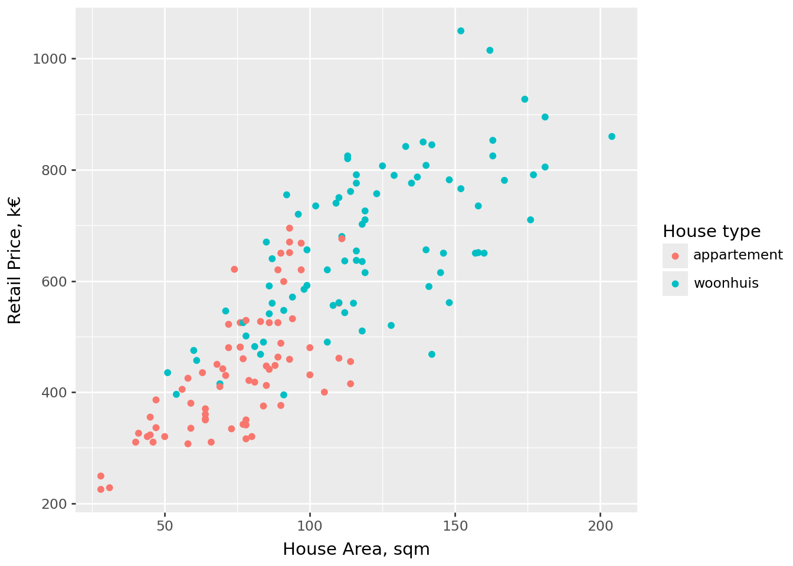

import polars as pl
from plotnine import *Practical 1: Data Visualization
This is the tutorial for the first practical on Data Visualization with Plotnine
The objective of the tutorial is to give students a chance to practice data visualization by applying the skills learned through the video lessons, on a new dataset.
Scope
Getting confident with building code is - surprise! - achieved by practicing! To provide enough possibilities for practice our tutorials will be longer than what we expect (any of) you to fit into the 2 hours. You can consider the challenges on the Utrecht data as the basis, and the challenges for the King’s county as an (optional) repetition of the concepts.
Preparation
Note
Before you begin your peer-programming session, please open a terminal and navigate to the course folder you created during the installation and preparations (remember cd and ls). When terminal is in the correct location (mine is C:/Projects/Teaching/data-literacy-project/), start the new Jupyter notebook environment in your terminal using the command you learned in Module 1 of the course.
uv run jupyter labCreate a new notebook and add a text cell atop your document for this practical session. Add a header # Data Visualization. Then add a code cell and place the following code there.
Then import the datasets for this practical. Add another code cell below (using the key ‘B’) and paste the following code. This will import two datasets we will be using in the session: Utrecht and King’s County.
ut = pl.read_csv("https://rrr.is/data24utrecht", try_parse_dates=True)
kc = pl.read_csv('https://rrr.is/data24kingscounty', try_parse_dates=True)Save the notebook, eg. as ‘Practical1.ipynb’.
Utrecht
Answer the following challenges using Utrecht dataset.
Challenge 1
Challenge
Reproduce this plot.

Challenge 2
Challenge
Plot the (asked) price of the house against the number of rooms. Use color to indicate number of bathrooms in each house.
Challenge 3
Challenge
How did the energy class of houses evolve for those built during the 20th and 21st century?
What is the build year of the newest house (woonhuis) with energy class B?
💡 You can limit the plot to the years between
What is the build year of the newest house (woonhuis) with energy class B?
💡 You can limit the plot to the years between
x1 and x2 using scale_x_continuous(limits=[x1, x2])Challenge 4
Challenge
Reproduce this plot.
💡 If you want to match the color palette as well, it’s qualitative brewer scale number 2
💡 You can add multi-line strings in Python using triple quotes like this
💡 If you want to match the color palette as well, it’s qualitative brewer scale number 2
💡 You can add multi-line strings in Python using triple quotes like this
"""long string which may span multiple lines"""Challenge 5
Challenge
Plot the retail values of houses by district. Which district has the highest median prices, and which has the lowest? Use coord_flip() if the district names are hard to read.
Challenge 6
Challenge
Plot the distribution of retail values for the two house types. Which of the two appears more symmetrical?
Challenge 7
Challenge
Plot house prices against house size for each district in small multiples. Add a blue linear regression line to each subplot. Which district shows the steepest slope, and which the shallowest?
Challenge 8
Challenge
What are the approximate coordinates of the train station? In which district do you think it is located? And what might be its zip code? (You can Google to check your guess.)
Kings County - optional challenges
Answer the following challenges using Kings County dataset.
Challenge 9
Challenge
Plot house prices against living area, coloring the points by property grade.
Challenge 10
Challenge
Do newer houses tend to cost more? Do higher-grade houses cost more? Are newer houses generally higher grade?
💡 Use a log scale for house prices to reduce overplotting.
💡 Use a log scale for house prices to reduce overplotting.
Challenge 11
Challenge
Visualize the distribution of price per square foot of living area for each housing condition. Would you say that newer houses tend to be in better condition?
Challenge 12
Challenge
Visualize the distribution of price per square foot of living area for water-facing and non-water-facing properties. Which distribution appears more symmetrical?